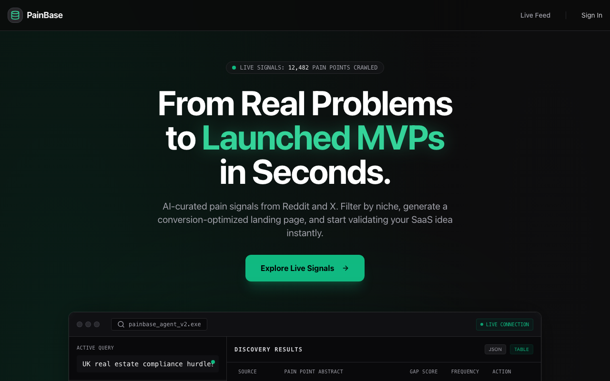
Priya understands the promise quickly: PainBase combines AI-curated Reddit/X signals with a generated validation artifact. The problem is framing. "Launch MVPs in seconds" sounds like an indie-hacker promise, while Priya wants evidence she can use in roadmap prioritization.
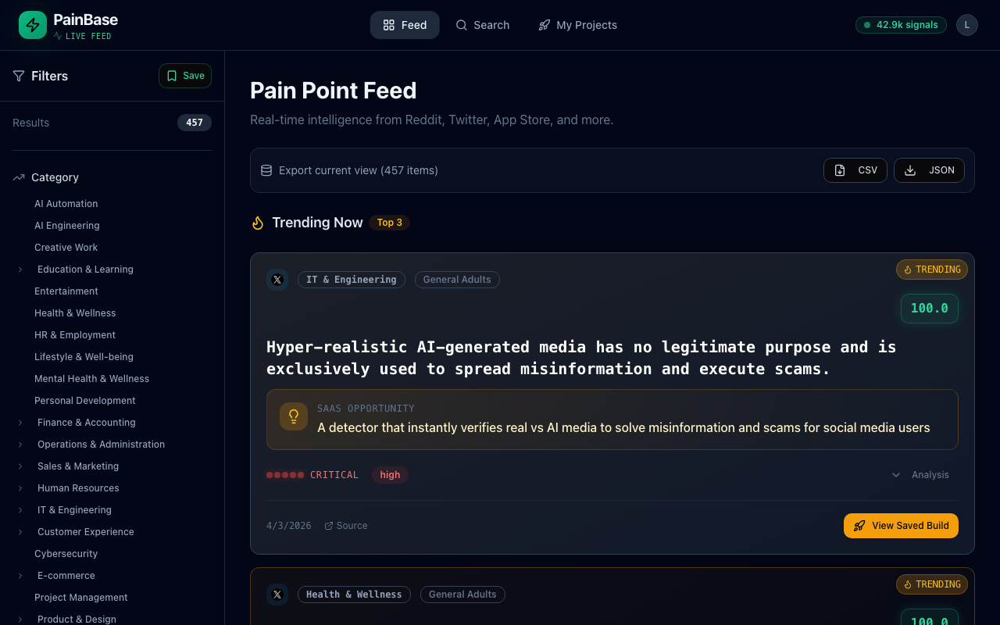
The feed shows strong volume claims, but the default trending items are consumer/social topics. Priya has to work to find B2B SaaS relevance, which weakens the first-use impression for a product team persona.
Priya immediately tests whether PainBase links to real external sources. Opening X in a new tab is realistic user behavior. The fact that an external platform may require login is friction, but not automatically a PainBase defect.
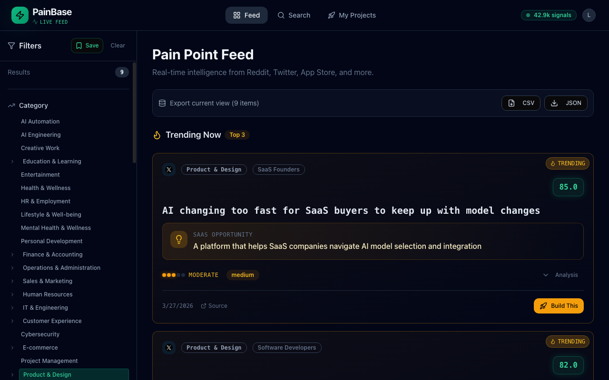
Filtering to Product & Design surfaces a topic Priya actually recognizes: SaaS buyers struggling with rapid AI model changes. Relevance improves, but only 9 results is thin for a category central to product discovery.
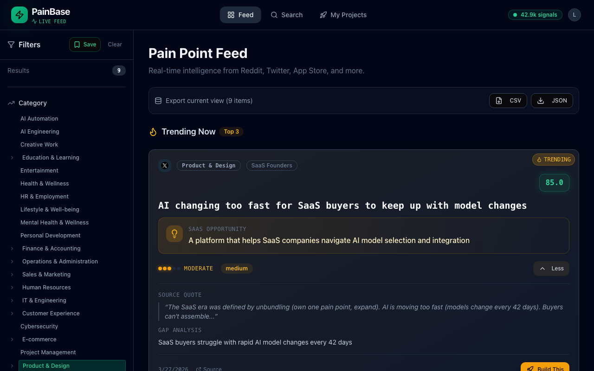
The analysis format is promising: source quote, gap analysis, scoring, and audience tags. But the visible source URL uses a suspicious placeholder-like status ID, which triggers a trust collapse for a PM who must defend evidence.
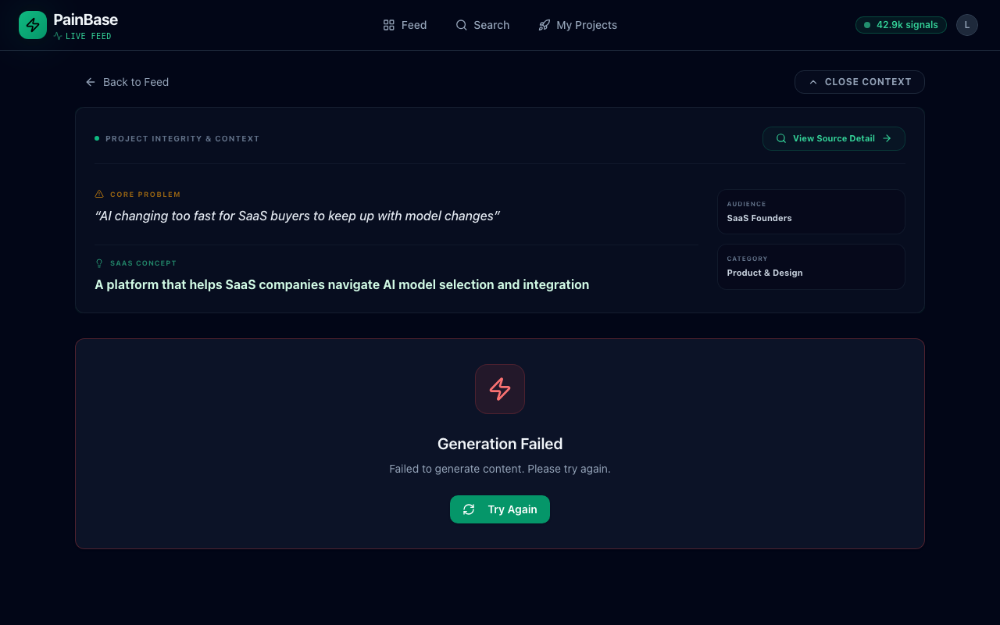
The activation path fails twice with "Generation Failed." Priya retries once, as a real evaluator would, but the lack of error detail turns a recoverable backend issue into a product trust issue.
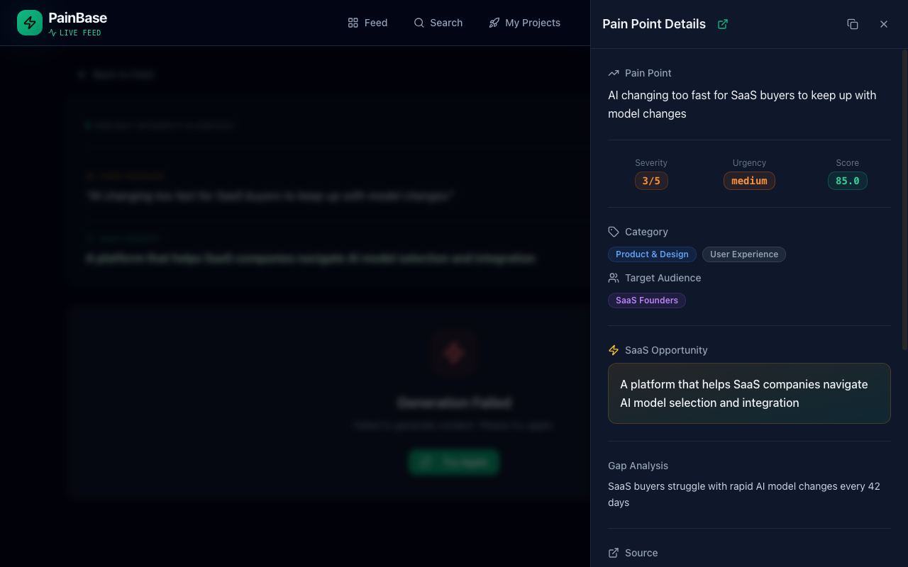
The source detail panel is the best PM-facing surface: severity, urgency, score, target audience, related signals, and gap analysis in one place. If source integrity is reliable, this is the part Priya would use in discovery review.
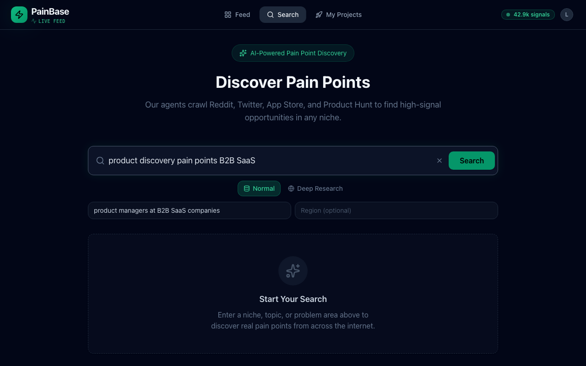
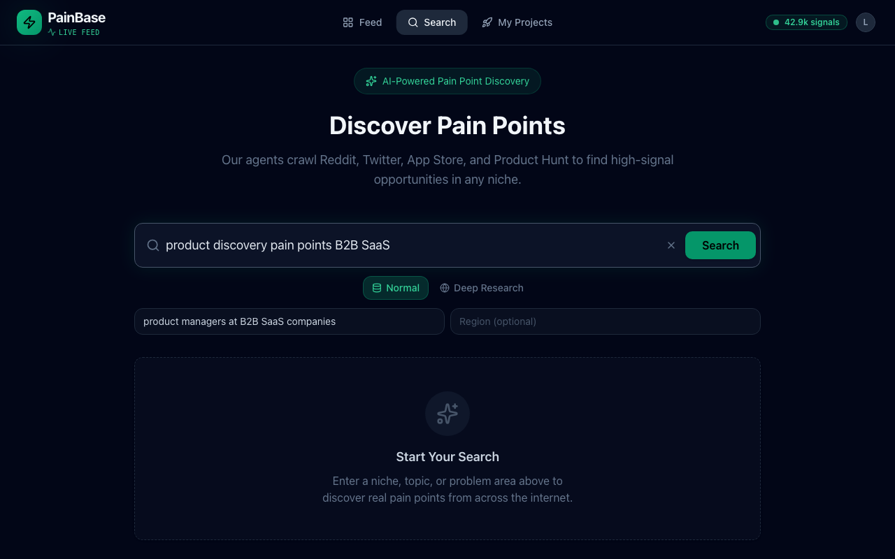
Priya follows the page guidance: specific query plus target audience. Search saves duplicate recent-search entries but returns no results, no loading state, and no error. For her workflow, this is the most damaging failure.
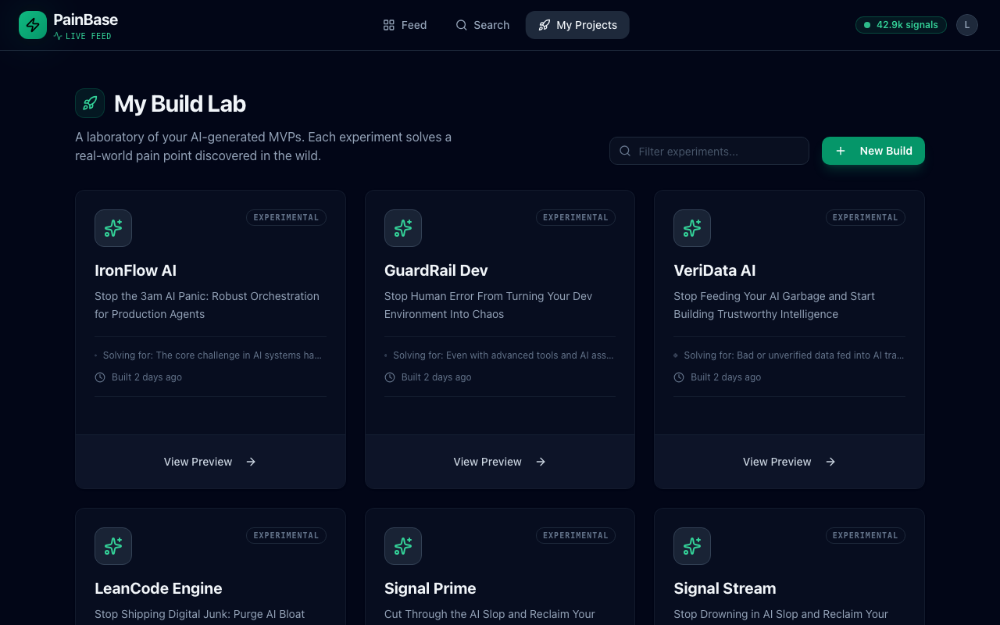
My Projects showed artifacts from earlier Menso test runs, not Priya's own session. From Priya's perspective this looked confusing, but it should be treated as test-account contamination rather than a PainBase product issue.
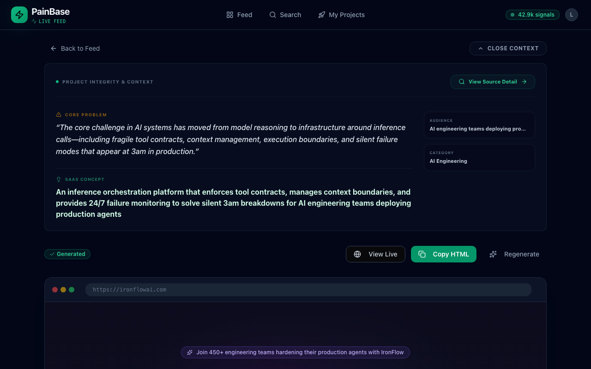
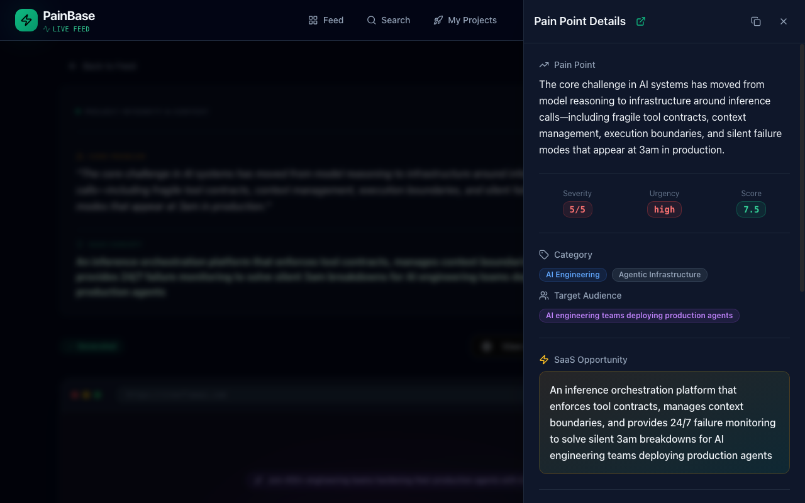
The completed generated page is polished and tangible. The source detail attached to the example build restores some confidence by showing structured evidence and a more credible source chain. This proves the product can deliver value when generation and provenance work.